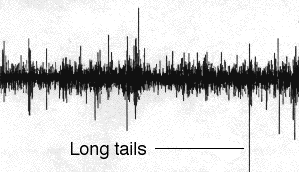

5. Random Fractals and the Stock Market
Visual Signature of Long Tails

One visual signature of long tails is that we observe differences much larger than those predicted by the normal distribution.
The line indicates one such difference.